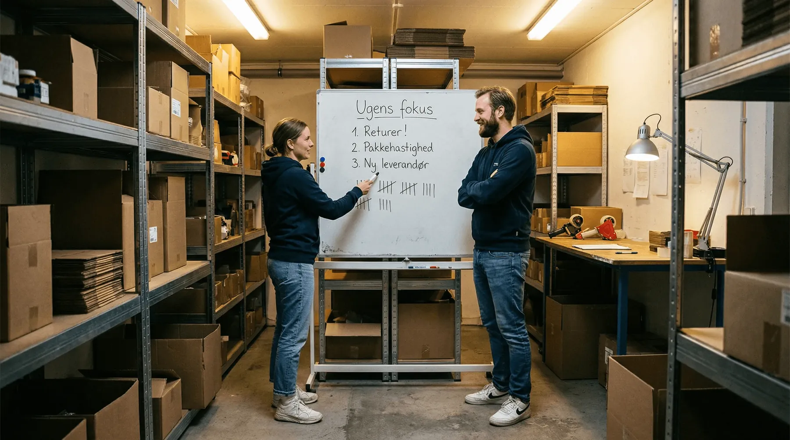

Systemet kom op at køre. Det gik hurtigere end I troede, og de første dage føltes næsten for nemme.
Tre uger senere begynder tallene at skride igen. En vare er væk. En lokation er tom, selv om systemet siger der står 14. Nogen har flyttet noget.
Systemet er ikke i stykker. Det bliver bare ikke brugt hele vejen.
Det svage sted er ikke indkøringen
De fleste forbereder sig på selve implementeringen: datoen, opstillingen, oplæringen. Og den del går som regel bedre end frygtet.
Det der kommer bagefter, er der sjældent nogen der planlægger.
“Vores problemer kom først bagefter. Nu skulle vi have alle folk til at forstå, at den nye måde at arbejde på betyder datadisciplin. Der er ingen genvej eller at springe over hvor gærdet er lavest: det er at bruge systemet og blive ved med at gøre det, dag ud og dag ind.”
Henrik Friis, direktør og ejer af Danfilter, i videoen på deres case-side
Det er en ærlig ting at sige højt, og den passer på næsten alle. Systemet virker fra dag ét. Vanerne gør ikke.
👉 Skal I i gang, eller er I lige kommet i gang? Tal med SmartPack →
De fem genveje
Genvejene ligner ikke sjusk. De ligner sund fornuft, og det er derfor de holder ved.
- Flytte en vare uden at scanne. Der skulle bruges plads, og den skulle bare et par meter. Systemet peger nu på en tom hylde, og den næste der skal bruge varen, leder.
- Tage “lige én” fra en anden lokation. Plukkeren ved hvor der ligger flere. Ordren bliver rigtig, men beholdningen bliver forkert to steder på én gang.
- Pakke uden at scanne. Man kan da se at det er den rigtige vare. Det kan man også de første 200 gange. Fejlen kommer på den, der ligner en anden.
- Modtage uden at tælle. Leverandøren plejer at sende det rigtige. Indtil de ikke gør, og så opdages det først når en kunde har købt varen.
- Rette det bagefter. “Jeg skriver det lige ind senere.” Senere er efter frokost, og inden da har tre andre truffet beslutninger på et tal der var forkert.
Hvorfor genvejen altid vinder i situationen
Genvejen sparer tid nu, for den ene der tager den. Regningen rammer en anden, senere, og den ser ikke ud til at hænge sammen med genvejen.
Den der sprang scanningen over, oplever ikke noget problem. Det gør kollegaen næste morgen, der bruger ti minutter på at lede. De to hændelser bliver aldrig sat sammen, og derfor bliver genvejen ved.
Sådan ser regningen ud på et lager med seks på gulvet: fem uregistrerede flytninger om dagen, hver med ti minutters søgning for en anden, er 50 minutter dagligt. Med rundt regnet 215 kr. i timen alt inklusive er det omkring 45.000 kr. om året. For fem gange “det tager kun et øjeblik”.
Og det er kun tiden. Oveni kommer de ordrer der strander, og de pakker der går forkert ud.
Hvad der virker
- Gør den rigtige vej den nemmeste. Skal man gå ti meter hen til en terminal for at melde en flytning, bliver den ikke meldt. Er terminalen i hånden, bliver den. De fleste disciplinproblemer er i virkeligheden indretningsproblemer.
- Mål på processen, ikke på personen. Antal uregistrerede flytninger er et tal om lageret. “Hvem gjorde det” er en anklage, og den får folk til at skjule det i stedet for at rette det.
- Tag ét tal frem hver dag. Fem minutter ved tavlen: hvor mange lokationer stemte ikke i går. Det virker, fordi det gør konsekvensen synlig med det samme, i stedet for om tre uger.
- Udpeg superbrugere på gulvet. Folk spørger den de står ved siden af, ikke den der sidder på kontoret. Har den de står ved siden af taget genvejen i et halvt år, lærer de den.
- Ledelsen skal selv gøre det. Retter chefen et tal direkte i systemet uden om processen, er processen afskaffet. Alle så det.
- Luk hullerne, i stedet for at bede folk lade være. Kan man overhovedet lukke en ordre uden at have scannet, bliver det gjort en travl dag. Det er en indstilling, ikke en holdning.
Hvornår er I ovre det?
Når ingen længere spørger hvorfor de skal scanne. Det tager typisk nogle uger, ikke måneder, hvis konsekvensen bliver synlig hurtigt nok.
Henrik siger det sådan: “Lige så snart vi fik styr på det, så virkede det, og alle tandhjulene faldt i hak.”
Det er den rigtige rækkefølge at forvente. Først virker det ikke helt. Så virker det.
Hvad SmartPack gør ved det
De fleste genveje kan lukkes som en indstilling i stedet for som en samtale:
- Krav om scanning ved pluk og pak, så en ordre ikke kan lukkes på skøn
- Flytning af varer som en handling på terminalen, så det tager færre sekunder at gøre det rigtigt end forkert
- Plukruten fordeles, så ingen behøver at “tage lige én” fra en anden lokation
- Live beholdning og lokation, så en afvigelse ses samme dag i stedet for ved næste optælling
- Løbende optælling på enkelte lokationer uden at stoppe driften
Det fjerner ikke behovet for at tale om det. Det gør bare, at samtalen handler om et tal alle kan se, i stedet for om hvem der har skylden.